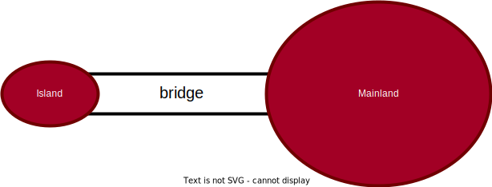
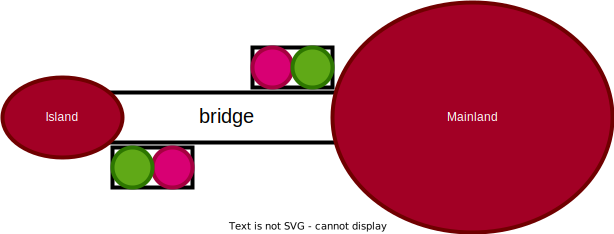
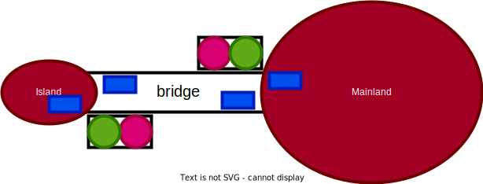
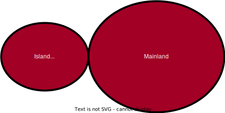
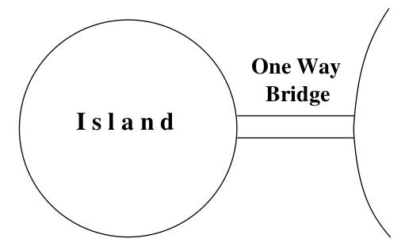
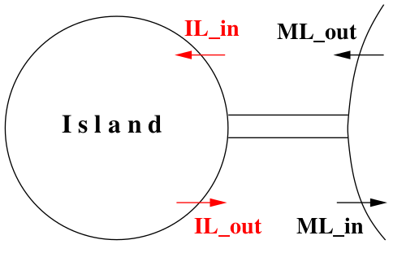
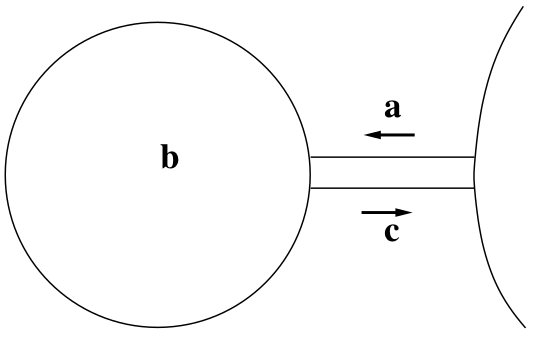
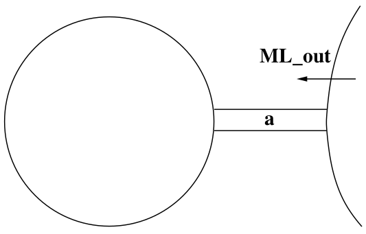
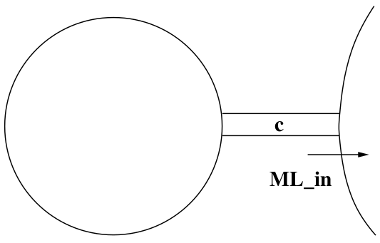
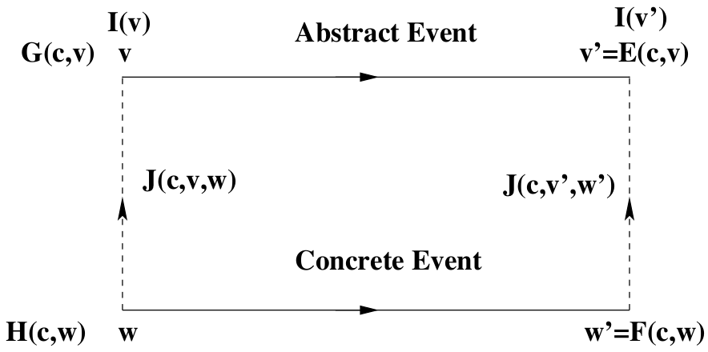

Développement de systèmes critiques
avec la méthode Event-B
Modélisation, Raffinement et Preuve
3A cursus ingénieurs - Mention Sciences du Logiciel
CentraleSupelec - Université Paris-Saclay - 2024/2025
CentraleSupelec - Université Paris-Saclay - 2024/2025

The Rodin Platform
- The Rodin Platform is an Eclipse-based IDE for Event-B that provides effective support for refinement and mathematical proof.
- The platform is open source, contributes to the Eclipse framework and is further extendable with plugins.
-
Rodin Platform and Plug-in Installation:
- Requires Java 17
- Download the Core: Rodin Platform file for your platform.
- Install the Atelier B Provers plugin from the Atelier B Provers Update site.
Purpose of this Lecture
- To present an example of system development
- Our approach $\to$ a series of more and more accurate models
- This approach is called refinement
- The models formalize the view of an external observer
- With each refinement observer “zooms in” to see more details
Purpose of this Lecture
- Each model will be analyzed and proved to be correct
- The aim is to obtain a system that will be correct by construction
- The correctness criteria are formulated as proof obligations
- Proofs will be performed by using the sequent calculus
- Inference rules used in the sequent calculus will be reviewed
What you will Learn
- The concepts of state and events for defining models
- Some principles of system development $\to$ invariants and refinement
- A refresher of classical logic and simple arithmetic foundations
- A refresher of formal proofs
Remark
Theoretical background provided during development.
Theoretical background provided during development.
A Requirements Document
- The system we are going to build is a piece of software connected
to some equipment. - There are two kinds of requirements:
- those concerned with the equipment, labeled EQP,
- those concerned with the function of the system, labeled FUN.
- The function of this system is to control cars on a narrow bridge.
- This bridge is supposed to link the mainland to a small island.
A Requirements Document
-
FUN-1 $\to$ the system is controlling cars on a bridge
between the mainland and an island.

A Requirements Document
- EQP-1 $\to$ the system has two traffic lights with two colors: green and red,
one of the traffic lights is situated on the mainland and the other one
on the island Both are close to the bridge.

A Requirements Document
-
EQP-2 $\to$ the traffic lights control the entrance to the
bridge
at both ends of it. -
EQP-3 $\to$ cars are not supposed to pass on a red traffic
light,
only on a green one.
A Requirements Document
-
EQP-4 $\to $ the system is equipped with four car sensors
each with two states: on or off. -
EQP-5 $\to$ the sensors are used to detect the presence
of cars entering or leaving the bridge.

A Requirements Document
-
FUN-2 $\to$ the number of cars on the bridge
and the island is limited. -
FUN-3 $\to$ the bridge is one way or the other,
not both at the same time.
Our Refinement Strategy
- Initial model $\to$ Limiting the number of cars (FUN-2)
- First refinement $\to$ Introducing the one way bridge (FUN-3)
- Second refinement $\to$ Introducing the traffic lights (EQP-1,2,3)
- Third refinement $\to$ Introducing the sensors (EQP-4,5)
Our Refinement Strategy
- Initial model $\to$ Limiting the number of cars (FUN-2)
- First refinement $\to$ Introducing the one way bridge (FUN-3)
- Second refinement $\to$ Introducing the traffic lights (EQP-1,2,3)
- Third refinement $\to$ Introducing the sensors (EQP-4,5)
Initial Model
- It is very simple
- We completely ignore the equipment $\to$ traffic lights and sensors
- We do not even consider the bridge
- We are just interested in the pair “island-bridge”
- We are focusing FUN-2 $\to$ limited number of cars on island-bridge
A Situation as Seen from the Sky

Two Events that may be Observed

Formalizing the State
- STATIC PART of the state $\to$ constant
$d$ with axiomaxm0_1
CONSTANTS $d$ AXIOMS axm0_1: $d \in \mathbb N$
axm0_1 states that Formalizing the State
- DYNAMIC PART of the state $\to$ variable
$n$ with invariantsinv0_1andinv0_2
VARIABLES $n$ INVARIANTS inv0_1: $n \in \mathbb N$ inv0_2: $n \leq d$
inv0_1)inv0_2) $\to$ this is FUN 2Event ML_out
- This is the first transition (or event) that can be observed
- A car is leaving the mainland and entering the Island-Bridge
- The number of cars in the Island-Bridge is incremented

Event ML_in
- We can also observe a second transition (or event)
- A car leaving the Island-Bridge and re-entering the mainland
- The number of cars in the Island-Bridge is decremented

Formalizing the two Events
(Approximation)
- An event is denoted by its name and its action (an assignment)
- Event
ML_outincrements the number of cars
ML_out $\mathrel{\widehat=}$
then
act0_1: $n := n + 1$
end
ML_in decrements the number of cars
ML_in $\mathrel{\widehat=}$
then
act0_1: $n := n - 1$
end
Why an Approximation?
- These events are approximations for two reasons:
- They might be insufficient at this stage because not consistent with the invariant
- They might be refined (made more precise) later
- We have to perform a proof in order to verify this consistency.
Invariants
- An invariant is a constraint on the allowed values of the variables
- An invariant must hold on all reachable states of a model
- To verify that this holds we must show that
- the invariant holds for initial states, and
- the invariant is preserved by all events
- We will formalize these two statements as proof obligations (POs)
- We need a rigorous proof showing that these POs indeed hold
Before-after Predicates
- To each event can be associated a before-after predicate
- It describes the relation between the values of the variable(s)
just before and just after the event occurrence - The before-value is denoted by the variable name, say
$n$ - The after-value is denoted by the primed variable name, say
$n'$
Before-after Predicates
Example
➠ The events
➠ The corresponding before-after predicates
ML_out $\mathrel{\widehat=}$
then
act0_1: $n := n + 1$
end
ML_in $\mathrel{\widehat=}$
then
act0_1: $n := n - 1$
end
➠ The corresponding before-after predicates
$$n' = n + 1$$
$$n' = n - 1$$
These representations are equivalent.
About the Shape
of the Before-after Predicates
- The before-after predicates we have shown are very simple
- The after-value
$n'$ is defined as a function of the before-value$n$ - This is because the corresponding events are deterministic
- In later lectures, we shall consider some non-deterministic events $$n' \in \{n + 1, n + 2\}$$
$$n' = n + 1$$
$$n' = n - 1$$
Intuition
about Invariant Preservation
- Let us consider invariant
inv0_1$$n \in \mathbb N$$ - And let us consider event
ML_outwith before-after predicate $$n' = n + 1$$ - Preservation of
inv0_1means that we have (just afterML_out): $$n' \in \mathbb N ~~~~~~\text{that is}~~~~~~ n + 1 \in \mathbb N$$
Being more Precise
- Under hypothesis
$n \in \mathbb N$ the conclusion$n + 1 \in \mathbb N$ holds - This can be written as follows $$n \in \mathbb N ~~~\vdash~~~ n + 1 \in \mathbb N$$
- This type of statement is called a sequent
-
Sequent above $\to$ invariant preservation proof obligation for
inv0_1
Sequents
- A sequent is a formal statement of the following shape $$H ~~~\vdash~~~ G$$
-
$H$ denotes a set of predicates $\to$ the hypotheses (or assumptions) -
$G$ denotes a predicate $\to$ the goal (or conclusion) -
The symbol
$~\vdash~$ , called the turnstyle, stands for provability.
It is read $\to$ Assumptions$H$ yield conclusion$G$
Proof Obligation
Invariant Preservation
-
We collectively denote our set of constants by
$c$ -
We denote our set of axioms by
$A(c)$ $\to$ $A_1(c)$, $A_2(c)$, $\ldots$ -
We collectively denote our set of variables by
$v$ -
We denote our set of invariants by
$I(c, v)$ $\to$ $I_1(c, v)$, $I_2(c, v)$, $\ldots$
Proof Obligation
Invariant Preservation
-
We are given an event with before-after predicate
$v' = E(c, v)$ -
The following sequent expresses preservation of invariant
$I_i(c, v)$ $$INV~:~A(c), I(c, v) ~~~\vdash~~~ I_i(c, E(c, v))$$ -
It says $\to$
$I_i(c, E(c, v))$ provable under hypotheses$A(c)$ and$I(c, v)$ - We have given the name $INV$ to this proof obligation
Explanation
of the Proof Obligation
$$INV~:~A(c), I(c, v) ~~~\vdash~~~ I_i(c, E(c, v))$$
-
We assume that
$A(c)$ as well as$I(c, v)$ hold just before
the occurrence of the event represented by$v' = E(c, v)$ -
Just after the occurrence, invariant
$I_i(c, v)$ becomes$I_i(c, v')$ ,
that is,$I_i(c, E(c, v))$ -
The predicate
$I_i(c, E(c, v))$ must then hold for$I_i(c, v)$ to be
an invariant
Vertical Layout
of Proof Obligations
- The proof obligation $$INV~:~A(c), I(c, v) ~~~\vdash~~~ I_i(c, E(c, v))$$
- can be re-written vertically as follows
$\text{Axioms}$
$\text{Invariants}$
$\vdash$
$\text{Modified Invariant}$
$A(c)$ $I(c, v)$ $\vdash$ $I_i(c, E(c, v))$
Back to our Example
➠ We have two events
➠ ... and two invariants
➠ Thus, we need to prove four proof obligations
ML_out $\mathrel{\widehat=}$
then
act0_1: $n := n + 1$
end
ML_in $\mathrel{\widehat=}$
then
act0_1: $n := n - 1$
end
➠ ... and two invariants
inv0_1: $n \in \mathbb N$
inv0_2: $n \leq d$
➠ Thus, we need to prove four proof obligations
Proof obligation
for ML_out and inv0_1
ML_out $\mathrel{\widehat=}$
then
act0_1: $n := n + 1$ // $n' = n + 1$
end
$\text{Axioms}$ axm0_1
$\text{Invariant}$ inv0_1
$\text{Invariant}$ inv0_2
$\vdash$
$\text{Modified Invariant}$ inv0_1
$d \in \mathbb N$ $n \in \mathbb N$ $n \leq d$ $\vdash$ $n + 1 \in \mathbb N$
This proof obligation is named ML_out/inv0_1/INV
Proof obligation
for ML_out and inv0_2
ML_out $\mathrel{\widehat=}$
then
act0_1: $n := n + 1$ // $n' = n + 1$
end
$\text{Axioms}$ axm0_1
$\text{Invariant}$ inv0_1
$\text{Invariant}$ inv0_2
$\vdash$
$\text{Modified Invariant}$ inv0_2
$d \in \mathbb N$ $n \in \mathbb N$ $n \leq d$ $\vdash$ $n + 1 \leq d$
This proof obligation is named ML_out/inv0_2/INV
Proof obligation for
ML_in and inv0_1
ML_in $\mathrel{\widehat=}$
then
act0_1: $n := n - 1$ // $n' = n - 1$
end
$\text{Axioms}$ axm0_1
$\text{Invariant}$ inv0_1
$\text{Invariant}$ inv0_2
$\vdash$
$\text{Modified Invariant}$ inv0_1
$d \in \mathbb N$ $n \in \mathbb N$ $n \leq d$ $\vdash$ $n - 1 \in \mathbb N$
This proof obligation is named ML_in/inv0_1/INV
Proof obligation
for ML_in and inv0_2
ML_in $\mathrel{\widehat=}$
then
act0_1: $n := n - 1$ // $n' = n - 1$
end
$\text{Axioms}$ axm0_1
$\text{Invariant}$ inv0_1
$\text{Invariant}$ inv0_2
$\vdash$
$\text{Modified Invariant}$ inv0_2
$d \in \mathbb N$ $n \in \mathbb N$ $n \leq d$ $\vdash$ $n - 1 \leq d$
This proof obligation is named: ML_in/inv0_2/INV
Summary
of Proof Obligations
ML_out/inv0_1/INV $d \in \mathbb N$ $n \in \mathbb N$ $n \leq d$ $\vdash$ $n + 1 \in \mathbb N$
ML_out/inv0_2/INV $d \in \mathbb N$ $n \in \mathbb N$ $n \leq d$ $\vdash$ $n + 1 \leq d$
ML_in/inv0_1/INV $d \in \mathbb N$ $n \in \mathbb N$ $n \leq d$ $\vdash$ $n - 1 \in \mathbb N$
ML_in/inv0_2/INV $d \in \mathbb N$ $n \in \mathbb N$ $n \leq d$ $\vdash$ $n - 1 \leq d$
Informal Proof
of ML_out/inv0_1/INV
$d \in \mathbb N$ $n \in \mathbb N$ $n \leq d$ $\vdash$ $n + 1 \in \mathbb N$
remove
hypotheses
$\Longrightarrow$
$n \in \mathbb N$ $\vdash$ $n + 1 \in \mathbb N$
obvious $\surd$
- In the first step, we remove some irrelevant hypotheses
- In the second and final step, we accept the sequent as it is
- We have implicitly applied inference rules
- For rigorous reasoning we will make these rules explicit
Inference Rules
$$ \frac{H_1 ~~~ \vdash ~~~ G_1 ~~~ ... ~~~ H_n ~~~ \vdash ~~~ G_n}{H ~~~ \vdash ~~~ G} ~~~~~~ \text{RULE_NAME}$$
- Above horizontal line $\to$
$n$ sequents called antecedents ($n \geq 0$ ) - Below horizontal line $\to$ exactly one sequent called consequent
- To prove the consequent, it is sufficient to prove the antecedents
- A rule with no antecedent (
$n = 0$ ) is called an axiom
Inference Rules
Monotonicity of Hypotheses
- The rule that removes hypotheses can be stated as follows: $$ \frac{H ~~~ \vdash ~~~ G}{H, H' ~~~ \vdash ~~~ G} ~~~~~~ \textrm{MON}$$
- It expresses the monotonicity of the hypotheses
Some Arithmetic Inference Rules
The Second Peano Axiom
$$ \frac{ }{n \in \mathbb N ~~~ \vdash ~~~ n + 1 \in \mathbb N} ~~~~~~ \textrm{P2}$$
$$ \frac{ }{0 < n ~~~ \vdash ~~~ n - 1 \in \mathbb N} ~~~~~~ \textrm{P2'}$$
More Arithmetic Inference Rules
Axioms about ordering relations
on the integers
$$ \frac{ }{n < m ~~~ \vdash ~~~ n + 1 \leq m} ~~~~~~ \textrm{INC}$$
$$ \frac{ }{n \leq m ~~~ \vdash ~~~ n - 1 \leq m} ~~~~~~ \textrm{DEC}$$
Application of Inference Rules
- Consider again the $2^{nd}$ Peano axiom: $$ \frac{ }{n \in \mathbb N ~~~ \vdash ~~~ n + 1 \in \mathbb N} ~~~~~~ \textrm{P2}$$
-
It is a rule schema where
$n$ is called a meta-variable -
It can be applied to following sequent by matching
$a + b$ with$n$ : $$a + b \in \mathbb N ~~~ \vdash ~~~ a + b + 1 \in \mathbb N$$
Proofs
- A proof is a tree of sequents with axioms at the leaves.
- The rules applied to the leaves are axioms.
- Each sequent is labeled with (name of) proof rule applied to it.
- The sequent at the root of the tree is called the root sequent.
- The purpose of a proof is to establish the truth of its root sequent.
A Formal Proof
of ML_out/inv0_1/INV
$d \in \mathbb N$ $n \in \mathbb N$ $n \leq d$ $\vdash$ $n + 1 \in \mathbb N$
MON
$\Longrightarrow$
$n \in \mathbb N$ $\vdash$ $n + 1 \in \mathbb N$
P2
$\surd$
Proof requires only application of two rules $\to$ MON and P2
A Failed Proof Attempt
ML_out/inv0_2/INV
$d \in \mathbb N$ $n \in \mathbb N$ $n \leq d$ $\vdash$ $n + 1 \leq d$
MON
$\Longrightarrow$
$n \leq d$ $\vdash$ $n + 1 \leq d$
?
- We put a ? to indicate that we have no rule to apply
- The proof fails $\to$ we cannot conclude with rule $\text{INC}$
(
$n < d$ needed) $$ \frac{ }{n < m ~~~ \vdash ~~~ n + 1 \leq m} ~~~~~~ \text{INC}$$
A Failed Proof Attempt
ML_in/inv0_1/INV
$d \in \mathbb N$ $n \in \mathbb N$ $n \leq d$ $\vdash$ $n - 1 \in \mathbb N$
MON
$\Longrightarrow$
$n \in \mathbb N$ $\vdash$ $n - 1 \in \mathbb N$
?
- The proof fails $\to$ we cannot conclude with rule $\text{P2'}$
(
$0 < n$ needed) $$ \frac{ }{0 < n ~~~ \vdash ~~~ n - 1 \in \mathbb N} ~~~~~~ \text{P2'}$$
A Formal Proof
of ML_in/inv0_2/INV
$d \in \mathbb N$ $n \in \mathbb N$ $n \leq d$ $\vdash$ $n - 1 \leq d$
MON
$\Longrightarrow$
$n \leq d$ $\vdash$ $n - 1 \leq d$
DEC
$\surd$
$$ \frac{ }{n \leq m ~~~ \vdash ~~~ n - 1 \leq m} ~~~~~~ \text{DEC}$$
Reasons for Proof Failure
- We needed hypothesis
$n < d$ to proveML_out/inv0_2/INV - We needed hypothesis
$0 < n$ to proveML_in/inv0_1/INVML_out $\mathrel{\widehat=}$ then act0_1: $n := n + 1$ endML_in $\mathrel{\widehat=}$ then act0_1: $n := n - 1$ end - We are going to add
$n < d$ as a guard to eventML_out - We are going to add
$0 < n$ as a guard to eventML_in
Improving the Events
Introducing Guards
- We are adding guards to the events
- The guard is the necessary condition for an event to occur
ML_out $\mathrel{\widehat=}$
when
grd0_1: $n < d$
then
act0_1: $n := n + 1$
end
ML_in $\mathrel{\widehat=}$
when
grd0_1: $0 < n$
then
act0_1: $n := n - 1$
end
Proof Obligation
General Invariant Preservation
-
Given
$c$ with axioms$A(c)$ and$v$ with invariants$I(c, v)$ -
Given an event with guard
$G(c, v)$ and b-a predicate$v' = E(c, v)$ -
We modify the Invariant Preservation PO as follows:
$\text{Axioms}$ $\text{Invariants}$ $\text{Guard of the event}$ $\vdash$ $\text{Modified Invariant}$$A(c)$ $I(c, v)$ $G(c, v)$ $\vdash$ $I_i(c, E(c, v))$
A Formal Proof
of ML_out/inv0_1/INV
$d \in \mathbb N$
$n \in \mathbb N$
$n \leq d$
$n < d$
$\vdash$
$n + 1 \in \mathbb N$
MON
$\Longrightarrow$
$n \in \mathbb N$ $\vdash$ $n + 1 \in \mathbb N$
P2
$\surd$
Adding new assumptions to a sequent does not affect its provability
A Formal Proof
of ML_out/inv0_2/INV
$d \in \mathbb N$
$n \in \mathbb N$
$n \leq d$
$n < d$
$\vdash$
$n + 1 \leq d$
MON
$\Longrightarrow$
$n < d$ $\vdash$ $n + 1 \leq d$
INC
$\surd$
- Now we can conclude the proof using rule $\text{INC}$ $$ \frac{ }{n < m ~~~ \vdash ~~~ n + 1 \leq m} ~~~~~~ \text{INC}$$
A Formal Proof
of ML_in/inv0_1/INV
$d \in \mathbb N$
$n \in \mathbb N$
$n \leq d$
$0 < n$
$\vdash$
$n - 1 \in \mathbb N$
MON
$\Longrightarrow$
$0 < n$ $\vdash$ $n - 1 \in \mathbb N$
P2'
$\surd$
- Now we can conclude the proof using rule $\text{P2'}$ $$ \frac{ }{0 < n ~~~ \vdash ~~~ n - 1 \in \mathbb N} ~~~~~~ \text{P2'}$$
A Formal Proof
of ML_in/inv0_2/INV
$d \in \mathbb N$
$n \in \mathbb N$
$n \leq d$
$0 < n$
$\vdash$
$n - 1 \leq d$
MON
$\Longrightarrow$
$n \leq d$ $\vdash$ $n - 1 \leq d$
DEC
$\surd$
Again, the proof still works after the addition of a new assumption
Re-proving the Events
No Proofs Fail
ML_out/inv0_1/INV $d \in \mathbb N$ $n \in \mathbb N$ $n \leq d$ $n < d$ $\vdash$ $n + 1 \in \mathbb N$
ML_out/inv0_2/INV $d \in \mathbb N$ $n \in \mathbb N$ $n \leq d$ $n < d$ $\vdash$ $n + 1 \leq d$
ML_in/inv0_1/INV $d \in \mathbb N$ $n \in \mathbb N$ $n \leq d$ $0 < n$ $\vdash$ $n - 1 \in \mathbb N$
ML_in/inv0_2/INV $d \in \mathbb N$ $n \in \mathbb N$ $n \leq d$ $0 < n$ $\vdash$ $n - 1 \leq d$
Initialisation
- Our system must be initialized (with no car in the island-bridge)
- The initialisation event is never guarded
- It does not mention any variable on the right hand side of
$:=$ - Its before-after predicate is just an after predicate
init $\mathrel{\widehat=}$ begin init0_1: $n := 0$ endAfter predicate $\Longrightarrow$$$n' = 0$$
Proof Obligation
Invariant Establishment
-
Given
$c$ with axioms$A(c)$ and$v$ with invariants$I(c, v)$ -
Given an init event with after predicate
$v' = K(c)$ -
The Invariant Establishment PO is the following:
$\text{Axioms}$ $\vdash$ $\text{Modified Invariant}$$A(c)$ $\vdash$ $I_i(c, K(c))$
Applying the Invariant
Establishment PO
axm0_1
$\vdash$
$\text{Modified}$ inv0_1
$d \in \mathbb N$ $\vdash$ $0 \in \mathbb N$
inv0_1/INV
axm0_1
$\vdash$
$\text{Modified}$ inv0_2
$d \in \mathbb N$ $\vdash$ $0 \leq d$
inv0_2/INV
More Arithmetic Inference Rules
- First Peano Axiom $$ \frac{ }{~~~ \vdash ~~~ 0 \in \mathbb N} ~~~~~~ \textrm{P1}$$
- Third Peano Axiom (slightly modified) $$ \frac{ }{n \in \mathbb N ~~~ \vdash ~~~ 0 \leq n} ~~~~~~ \textrm{P3}$$
Proofs of Invariant
Establishment
$d \in \mathbb N$ $\vdash$ $0 \in \mathbb N$
MON
$\Longrightarrow$
$\vdash$ $0 \in \mathbb N$
P1
$\surd$
$d \in \mathbb N$ $\vdash$ $0 \leq d$
P3
$\surd$
A Missing Requirement
- It is possible for the system to be blocked if both guards are false
- We do not want this to happen
- We figure out that one important requirement was missing
- FUN-4 $\to$ Once started, the system should work for ever (Deadlock Freedom)
Proof Obligation
The theorem PO rule
- Given
$c$ with axioms$A(c)$ and$v$ with invariants$I(c, v)$ - Given the theorem
$Th(c, v)$ - Given the guards
$G_1(c, v)$ ,$...$ ,$G_m(c, v)$ of the events - We have to prove the following:
$A(c)$ $I(c, v)$ $\vdash$ $Th(c, v)$
$A(c)$ $I(c, v)$ $\vdash$ $G_1(c, v)$ $\lor$ $...$ $\lor$ $G_m(c, v)$
Applying the Deadlock Freedom PO
axm0_1
inv0_1
inv0_2
$\vdash$
$\text{Disjunction of guards}$
$d \in \mathbb N$ $n \in \mathbb N$ $n \leq d$ $\vdash$ $n < d$ $\lor$ $0 < n$
- This cannot be proved with the inference rules we have so far
$n \leq d$ can be replaced by$n = d \lor n < d$ - We continue our proof by a case analysis:
- case 1:
$n = d$ - case 2:
$n < d$
- case 1:
Inference Rules for Disjunction
- Proof by case analysis $$ \frac{H, P ~~~ \vdash ~~~ R ~~~~~~~~~ H, Q ~~~ \vdash ~~~ R }{H, P \lor Q ~~~ \vdash ~~~ R} ~~~~~~ \textrm{OR_L}$$
- Choice for proving a disjunctive goal $$ \frac{H ~~~ \vdash ~~~ P }{H ~~~ \vdash ~~~ P \lor Q} ~~~~~~ \textrm{OR_R1}$$ $$ \frac{H ~~~ \vdash ~~~ Q }{H ~~~ \vdash ~~~ P \lor Q} ~~~~~~ \textrm{OR_R2}$$
Proof of Deadlock Freedom
$d \in \mathbb N$ $n \in \mathbb N$ $n \leq d$ $\vdash$ $n < d$ $\lor$ $0 < n$
MON
$\Longrightarrow$
$n \leq d$ $\vdash$ $n < d$ $\lor$ $0 < n$
OR_L
$\Longrightarrow$
$n < d$ $\vdash$ $n < d$ $\lor$ $0 < n$
$n = d$ $\vdash$ $n < d$ $\lor$ $0 < n$
$n < d$ $\vdash$ $n < d$ $\lor$ $0 < n$
OR_R1
$\Longrightarrow$
$n < d$ $\vdash$ $n < d$
?
$\Longrightarrow$
seems to be obvious
$n = d$ $\vdash$ $n < d$ $\lor$ $0 < n$
?
$\Longrightarrow$
can be (partially) solved
by applying the equality
More Inference Rules
Identity and Equality
- The identity axiom (conclusion holds by hypothesis) $$ \frac{}{P ~~~ \vdash ~~~ P} ~~~~~~ \textrm{HYP}$$
- Rewriting an equality (EQ_LR) and reflexivity of equality (EQL) $$ \frac{H(F), E = F ~~ \vdash ~~ P(F)}{H(E), E = F ~~ \vdash ~~ P(E)} ~~~~ \textrm{EQ_LR}$$ $$ \frac{ }{\vdash ~~ E = E} ~~~~ \textrm{EQL}$$
Proof of Deadlock Freedom
$n < d$ $\vdash$ $n < d$ $\lor$ $0 < n$
OR_R1
$\Longrightarrow$
$n < d$ $\vdash$ $n < d$
HYP
$\surd$
$n = d$ $\vdash$ $n < d$ $\lor$ $0 < n$
EQ_LR
$\Longrightarrow$
$\vdash$ $d < d$ $\lor$ $0 < d$
OR_R2
$\Longrightarrow$
$\vdash$ $0 < d$ ?
-
We still have a problem $\to$
$d$ must be positive!
Adding the Forgotten Axiom
-
If
$d = 0$ , then no car can ever enter the Island-Bridge
CONSTANTS $d$ AXIOMS axm0_1: $d \in \mathbb N$ axm0_2: $0 < d$
Initial Model
Conclusion
- Thanks to the proofs, we discovered 3 errors
- They were corrected by:
- adding guards to both events
- adding an axiom
- The interaction of modeling and proving is an essential element
of Formal Methods with Proofs
Our Refinement Strategy
- Initial model: Limiting the number of cars (FUN-2)
- First refinement: Introducing the one way bridge (FUN-3)
- Second refinement: Introducing the traffic lights (EQP-1,2,3)
- Third refinement: Introducing the sensors (EQP-4,5)
Reminder of the physical system
First Refinement
Introducing a One-Way Bridge
- We go down with our parachute
- Our view of the system gets more accurate
- We introduce the bridge and separate it from the island
- We refine the state and the events
- We also add two new events $\to$
IL_inandIL_out - We are focusing on FUN-3 $\to$ one-way bridge
NEW SLIDE

First Refinement
Introducing a One-Way Bridge


Introducing New Variables
- $a$ denotes the number of cars on bridge going to island
- $b$ denotes the number of cars on island
- $c$ denotes the number of cars on bridge going to mainland
- $a$, $b$, and $c$ are the concrete variables
- They replace the abstract variable $n$
Refining the State
Formalizing Variables $a$, $b$, and $c$
- Variables $a$, $b$, and $c$ denote natural numbers
- $a \in \mathbb N$
- $b \in \mathbb N$
- $c \in \mathbb N$
Refining the State
Introducing New Invariants
- Relating the concrete state ($a$, $b$, $c$) to the abstract state ($n$) $$ a + b + c = n$$
- Formalizing the new invariant: one way bridge (this is FUN-3) $$ a = 0 \lor c = 0$$
Refining the State
Summary
- CONSTANTS
- $d$
- VARIABLES
- $a$, $b$, $c$
-
INVARIANTS
- inv1_1: $a \in \mathbb N$
- inv1_2: $b \in \mathbb N$
- inv1_3: $c \in \mathbb N$
- inv1_4: $a + b + c = n$
- inv1_5: $a = 0 \lor c = 0$
- Invariants inv1_1 to inv1_5 are called the concrete invariants
- inv1_4 glues the abstract state, $n$, to the concrete state, $a$, $b$, $c$
Proposal for Refining Event ML_out

- ML_out $\mathrel{\widehat=}$
- when
- $a + b < d$
- $c = 0$
- then
- $a := a + 1$
- end
- when
Proposal for Refining Event ML_in

- ML_in $\mathrel{\widehat=}$
- when
- $0 < c$
- then
- $c := c - 1$
- end
- when
Before-after Predicates
Preserved Variables
- ML_out $\mathrel{\widehat=}$
- when
- $a + b < d$
- $c = 0$
- then
- $a := a + 1$
- end
- when
- ML_in $\mathrel{\widehat=}$
- when
- $0 < c$
- then
- $c := c - 1$
- end
- when
- Before-after predicates showing the unmodified variables:
$$ a' = a + 1 \land b' = b \land c' = c$$
$$ a' = a \land b' = b \land c' = c - 1$$
Intuition about Refinement
-
The concrete model behaves as specified by the abstract model
(i.e., concrete model does not exhibit any new behaviors) -
To show this we have to prove that
- every concrete event is simulated by its abstract counterpart
(event refinement: following slides) - to every concrete initial state corresponds an abstract one
(initial state refinement: later)
- every concrete event is simulated by its abstract counterpart
- We will make these two conditions more precise and formalize them as proof obligations.
Intuition about Refinement
- (abstract) ML_out $\mathrel{\widehat=}$
- when
- $n < d$
- then
- $n := n + 1$
- end
- when
- (concrete) ML_out $\mathrel{\widehat=}$
- when
- $a + b < d$
- $c = 0$
- then
- $a := a + 1$
- end
- when
- The concrete version is not contradictory with the abstract one
- When the concrete version is enabled then so is the abstract one
- Executions seem to be compatible
Intuition about Refinement
- (abstract) ML_in $\mathrel{\widehat=}$
- when
- $0 < n$
- then
- $n := n - 1$
- end
- when
- (concrete) ML_in $\mathrel{\widehat=}$
- when
- $0 < c$
- then
- $c := c - 1$
- end
- when
- Same remarks as in the previous slide
- But this has to be confirmed by well-defined proof obligations
Proof Obligations for Refinement
- The concrete guard is stronger than the abstract one
- Each concrete action is compatible with its abstract counterpart
Proving Correct Refinement
the Situation
- Constants $c$ with axioms $A(c)$
- Abstract variables $v$ with abstract invariant $I(c, v)$
- Concrete variables $w$ with concrete invariant $J(c, v, w)$
- Abstract event with guards $G(c, v)$: $G_1(c, v)$, $G_2(c, v)$, $...$
- Abstract event with before-after predicate $v' = E(c, v)$
- Concrete event with guards $H(c, w)$ and b-a predicate $w' = F(c, w)$
Correctness of Event Refinement
- The concrete guard is stronger than the abstract one
(Guard Strengthening, following slides) - Each concrete action is simulated by its abstract counterpart
(Concrete Invariant Preservation, later)
Proof Obligation
Guard Strengthening (GRD)
- Axiom
- Abstract Invariant
- Concrete Invariant
- Concrete Guard
- $\vdash$
- Abstract Guard
- $A(c)$
- $I(c, v)$
- $J (c, v, w)$
- $H(c, w)$
- $\vdash$
- $G_i(c, v)$
ML_out/GRDML_in/GRD
Applying Guard Strengthening
to Event ML_out
- $d \in \mathbb N$
- $0 < d$
- $n \in \mathbb N$
- $n \leq d$
- $a \in \mathbb N$
- $b \in \mathbb N$
- $c \in \mathbb N$
- $a + b + c = n$
- $a = 0 \lor c = 0$
- $a + b < d$
- $c = 0$
- $\vdash$
- $n < d$
MON
- $a + b + c = n$
- $a + b < d$
- $c = 0$
- $\vdash$
- $n < d$
EQ_LR
- $a + b + 0 = n$
- $a + b < d$
- $\vdash$
- $n < d$
ARITH ...
...
- $a + b = n$
- $a + b < d$
- $\vdash$
- $n < d$
EQ_LR
- $n < d$
- $\vdash$
- $n < d$
HYP
Applying Guard Strengthening
to Event ML_in
- $d \in \mathbb N$
- $0 < d$
- $n \in \mathbb N$
- $n \leq d$
- $a \in \mathbb N$
- $b \in \mathbb N$
- $c \in \mathbb N$
- $a + b + c = n$
- $a = 0 \lor c = 0$
- $0 < c$
- $\vdash$
- $0 < n$
NEW SLIDE
Our Refinement Strategy
- Initial model: Limiting the number of cars (FUN-2)
- First refinement: Introducing the one way bridge (FUN-3)
- Second refinement: Introducing the traffic lights (EQP-1,2,3)
- Third refinement: Introducing the sensors (EQP-4,5)
NEW SLIDE
Our Refinement Strategy
- Initial model: Limiting the number of cars (FUN-2)
- First refinement: Introducing the one way bridge (FUN-3)
- Second refinement: Introducing the traffic lights (EQP-1,2,3)
- Third refinement: Introducing the sensors (EQP-4,5)
NEW SLIDE
NEW SLIDE